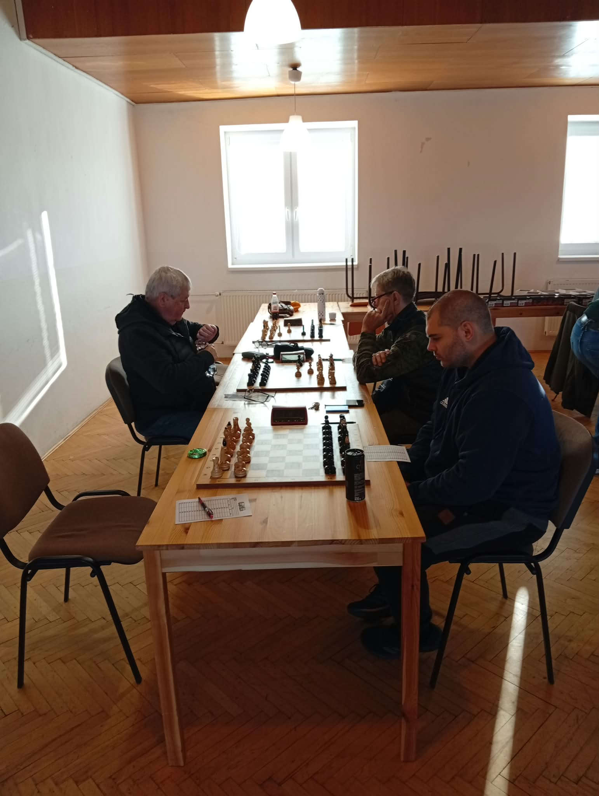
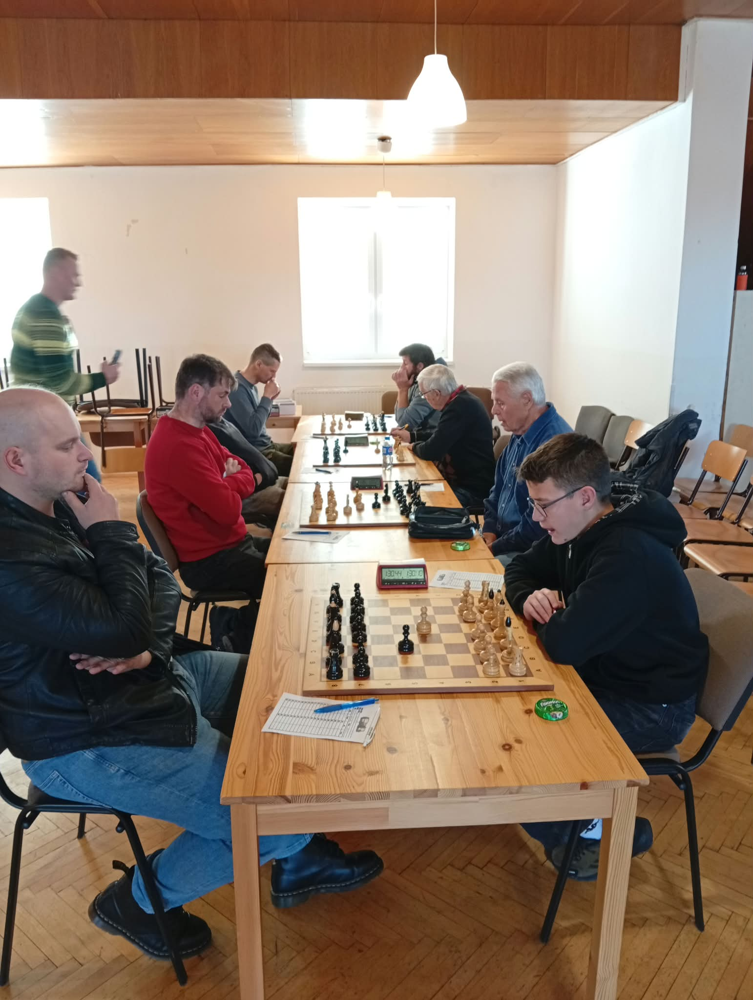

V rámci 3. kola OP I Hodonín jsme zavítali do nových a klidnějších prostor Jiskry Strážnice. Pohled na soupisky sliboval vyrovnané partie. S výjimkou prvních dvou šachovnic, kde měli domácí výraznou ratingovou převahu, se totiž proti sobě postavili hráči s poměrně srovnatelnou výkonností. Béčko si mezitím odbylo domácí premiéru, když přivítalo Veselské „C“ v souboji dvou týmů, které dosud nebodovaly. Oba naše týmy nakonec musely zkousnout porážku. Pomyslné body za předvedenou hru ale dnes patří béčku, které i přes prohru odehrálo své nejlepší letošní utkání.
Co se áčka týče, jako první se končilo na první šachovnici. V souboji týmových jedniček nezaváhal domácí Pavel Solařík a rychle, bez větších potíží, dovedl partii k vítězství. Svůj přístup k partii shrnul Jožka Lacina, který si „odvážně“ připravil Englundův gambit, slovy: „Já to hrávám v bleskovkách a tam mi to vychází…“ No, tím mě příliš nepotěšil! Gambit mu v zahájení žádnou výhodu ve vývinu nepřinesl. Už po druhém tahu totiž počítač ukazoval výhodu bílého +1,8. Partie tak skončila jasným vítězstvím domácího hráče.
Jelikož Jarkův zápis (a také zápis jeho soupeře) dává hodně prostoru pro fantazii a vlastní interpretaci, je přehrání jeho partie níže spíše nejpravděpodobnější variantou – i tak je ale jasné, kde se partie zlomila, což ostatně sám Jarek po zápase říkal. Chyba v zahájení, vidlička na dámu a nechráněného střelce, a pak už se ztráta těžko doháněla. 2:0 pro domácí.
Třetí dohranou partií byl souboj na 5. šachovnici, který přinesl první půlbod pro náš tým. Marian si sice v průběhu hry vytvořil určitou převahu, ta ale nikdy nebyla natolik výrazná, aby v relativně uzavřené pozici dokázal převzít iniciativu a vytvořit rozhodující tlak. Remíza tak byla spravedlivým výsledkem a oba hráči s ní mohli být spokojeni. 2,5 : 0,5 pro domácí.
Ani další partie naše vyhlídky na bodový zisk nezlepšila. V souboji tradičních soupeřů Jožky Vraňana a Ondry Juráska si domácí hráč pomalu, ale jistě budoval silnou pozici. Pomohl mu k tomu i Jožkův slabý jezdec na d4, kterého se mu podařilo vytvořit už v 9. tahu. Ondra příležitost využil a partii v klidu dovedl do vítězného konce. Jediný okamžik, kdy se Jožka mohl vrátit do hry, přišel ve 20. tahu. Tah g4 sice na první pohled nevypadal příliš nadějně, v tomto případě by ale pozici zcela vyrovnal a zajistil remízu. Škoda. 3,5 : 0,5.
Podobný průběh měla i partie na 7. šachovnici – slabší zahájení a následná dlouhá defenziva. Ve 20. tahu už počítač ukazoval výhodu bílého přes +5. I tady se ale nabízela možnost remízy, a dokonce ještě jasnější než v předchozí partii. René dostal šanci vrátit se do hry po bílém tahu 28. Kh3. Analýza rázem ukazovala rovnou pozici a jasnou remízu. Chvíli se jí René skutečně držel, ale ve 30. tahu nesměl zahrát Je1+, nýbrž Jd2+. Tento tah by zajistil opakování tahů, případně by bílému přinesl velké problémy, pokud by se nebránil přesně. 4,5 : 0,5 a o výsledku utkání bylo rozhodnuto.
V tuto chvíli už nebylo o co hrát, a tak se na druhé šachovnici domluvila remíza. Což je trochu škoda, protože podle mě šlo o Luďkovu zatím nejlepší letošní partii. Měl ji dobře rozehranou – nutno ale podotknout, že i díky velmi nestandardnímu zahájení a celkovému pojetí hry ze strany soupeře. Nebyl však důvod partii dohrávat, když ani jeden z hráčů neměl ambici hrát na výhru. Pro Luďka to navíc byl asi optimální výsledek, protože posledními tahy se pozice začala překlápět v jeho neprospěch.
Poslední dohrávanou partií byl souboj pana Fanty se mnou. Osobně jsem ji pojal jako odvetu za loňský rok, kdy jsem si dobře pamatoval, jak mě pan Fanta vyškolil v koncovce a dokázal otočit partii, kterou jsem už považoval za vyhranou. I proto jsem odmítl opakovanou nabídku remízy a pokračoval ve hře, přestože už celkové skóre utkání nešlo zvrátit. V partii jsem získal materiální výhodu díky tahu 14. ... Dxc1. Pan Fanta v této pozici nenašel tah Jc3, kterým by mi uzamkl dámu a donutil mě složitě hledat cestu z obklíčení. Místo toho zahrál jezdcem vpřed. Výsledkem byla moje výhoda jezdce proti pěšci, kterou jsem si držel prakticky po celou partii. Přesto jsem si nejednou pomyslel, že bych byl docela rád, kdyby soupeř partii vzdal. Moje výhoda se totiž postupem času začala pomalu rozplývat. A tak jsem stejně jako na jiných šachovnicích, kde měli naši hráči možnost zachránit remízu v jinak prohraných pozicích, nabídl v koncovce remízu i já panu Fantovi. K mému štěstí ale v dané pozici nenašel správné pokračování. Po sérii nepřesností na obou stranách jsem tak nakonec v partii doklopýtal k vítězství a upravil konečné skóre na 5 : 2 pro domácí.
Jelikož béčko hrálo dneska až od 10:15, trochu sem doufal, že stihnu jejich zápas. Nestalo se tak a skončili dokonce ještě dřív než my. Jejich výsledek 3:4 sice zase nepřinesl body do tabulky, ale potvrzuje se vzestupná tendence a zlepšené výkony.
Strážnice - DBa, 1. šachovnice, Solařík Pavel (1705) - Lacina (1430), 1 - 0
Strážnice - DBa, 2. šachovnice, Padalík Luděk (----) - Šafařík Vojtěch (1918), 0,5 - 0,5
Strážnice - DBa, 3. šachovnice, Fanta Jiří (1676) - Karel Krátký (1588), 0 - 1
Strážnice - DBa, 4. šachovnice, Vraňan Josef (1523) - Jurásek Ondřej (1512), 0 - 1
Strážnice - DBa, 5. šachovnice, Bína Zdeněk (1389) - Bohun Marian (1365), 0,5 - 0,5
Strážnice - DBa, 6. šachovnice, Řezáč Josef (1380) - Nožička Jaroslav (1465), 0 - 1 (nekompletní zápis)
Strážnice - DBa, 7. šachovnice, Solařík Ondřej (----) - Balada René (1336), 1 - 0
DBb - Veselí 'C', 1. šachovnice, Kubík Vojtěch (1488) - Hrabal Radek (1673), 0 - 1
DBb - Veselí 'C', 2. šachovnice, Vašíček František (1567) - Závodný Lukáš (----), 0 - 1
DBb - Veselí 'C', 3. šachovnice, Budovič Jan (1440) - Páč David (1415), 0,5 - 0,5
DBb - Veselí 'C', 4. šachovnice, Chabiča Pave (1742) - Blažek Petr (----), 1 - 0
DBb - Veselí 'C', 5. šachovnice, Múčka Miroslav (1566) - Galuška Petr (1488), 0,5 - 0,5
DBb - Veselí 'C', 6. šachovnice, Macík Stanislav (1134) - Kotásek Aleš (----), 1 - 0
DBb - Veselí 'C', 7. šachovnice, Svoboda Tomáš (----) - Eliáš Petr (1375), 1 - 0

